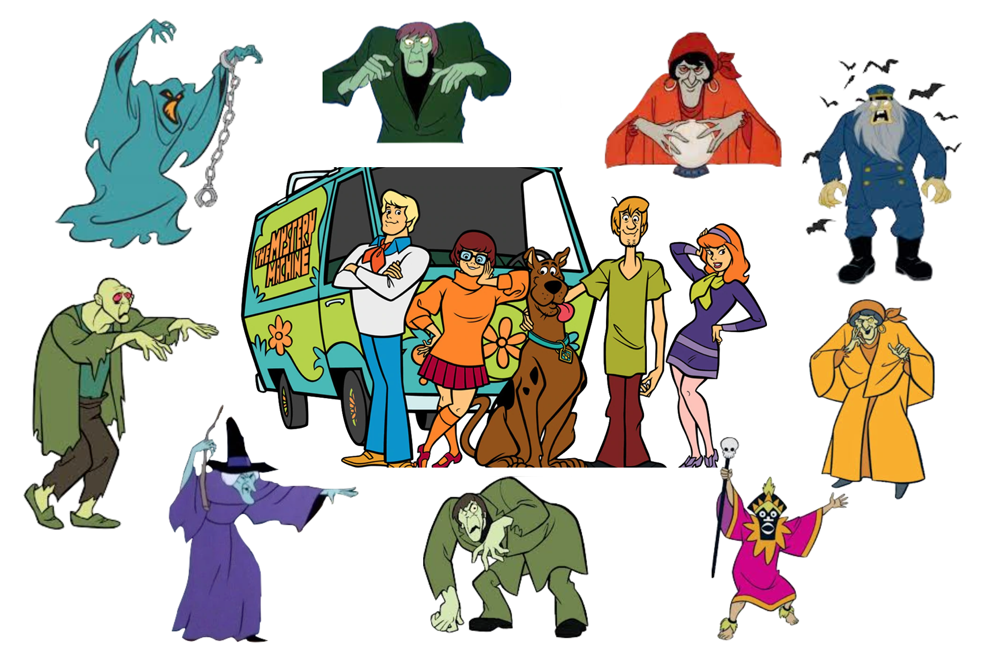

Assignment 09
INTERACTION EFFECTS
The goal of this assignment is to give you experience fitting and interpreting regression models with interaction effects. For this assignment, you will be fitting several regression models to examine whether there are differences in the engagement level of reviewers on IMDb for Scooby-Doo episodes/movies based on which members of Mystery Inc caught the villain. To do so, you will use the data in the file scoobydoo.csv.
Instructions
Submit your responses to each of the questions below in a PDF document. All graphics should be resized so that they do not take up more room than necessary and also should have an appropriate caption. This assignment is worth 12 points. (Each question is worth 1 point unless otherwise noted.)
Preparation: Fitting Models
Create the following dummy variables for the analysis;
- A set of three dummy variables to represent the the
caught_byattribute: Shaggy/Scooby, Fred/Daphne/Velma, and Other/Combo. - A dummy variable to represent media format.
Then fit the following regression models. For all models, use IMDb engagement as the response variable.
- Model A: Main effects of
caught_by(use the other/combo group as your reference group), IMDb rating, number of catchphrases uttered, and media format. - Model B: The same main effects included in Model A; and an interaction effect between media format and IMDb rating.
- Model C: The same main effects included in Model A; and an interaction effect between number of catchphrases uttered and IMDb rating.
You will use the output from these fitted models to answer the questions in the assignment.
Description
Create and report a table of pairwise correlations between engagement, each of the three dummy variables you created to represent
caught_by, IMDb rating, number of catchphrases uttered, and the media format dummy variable.Based on the correlation table, can you infer whether or not there will be a sample interaction between between IMDb rating and number of catchphrases uttered? Explain.
Table of Regression Results
- Examine the structure and formatting of the table in the “Presenting Results from Many Fitted Regression Models” section here. Mimic the format and structure of this table to create a table to present the numerical information from the three models you fitted in this assignment. Make sure the table you create also has an appropriate caption. If the table is too wide, change the page orientation in your word processing program to ``Landscape’’, rather than changing the size of the font. (2pts.)
Model B
Write the fitted regression equation for Model B.
Based on the inferential results from fitting this model, is there an interaction effect between media format and IMDb rating? Explain.
Interpret the coefficient associated with the interaction effect between media format and IMDb rating.
Re-write the fitted regression equation, by writing two fitted equations: one for TV episodes and one for movies. Be sure each equation is identified with the appropriate subgroup.
Create and include a plot of the fitted model showing the pertinent results from Model B. Be sure to appropriately differentiate between lines that you include in the plot (e.g., do not differentiate by color unless you plan to print in color). If you partial out any variables, be sure to note this in the caption.
Model C
Write the fitted regression equation for Model C.
Based on the inferential results from fitting this model, is there an interaction effect between number of catchphrases uttered and IMDb rating? Explain.
Create and include a plot of the fitted model showing the pertinent results from Model C. Be sure to appropriately differentiate between lines that you include in the plot (e.g., do not differentiate by color unless you plan to print in color). If you partial out any variables, be sure to note this in the caption.
Use the plot you created in Question 11 to help interpret the interaction effect between number of catchphrases uttered and IMDb rating.